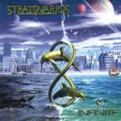

|
|
||
Stratovarius : Infinite (2000) |
|

http://www.stratovarius.com |
1. Hunting High and Low 4:08 |
9/10 |
|
"Infinite" es el último álbum de estudio de Stratovarius, la banda finlandesa que en la actualidad es uno de los principales referentes en el paisaje del power metal europeo. Llevan haciendo power metal progresivo, con influencias neoclásicas, desde hace más de una década, pero han conseguido que esto no le reste frescura ni originalidad a su trabajo. Actualmente están "de vacaciones", pero se espera que para el año que viene, por fin, vuelvan a sacar un nuevo disco. "Hunting High and Low" comienza el disco con un potente solo de teclado acompañado de la guitarra, que establece una base de sonido progresivo, pero de auténtico metal. La voz de Timo Kotipelto, clara, y potente, como siempre, y un fantástico estribillo acompañado de coros construyen una canción realmente buena. En "Millennium" el doble bombo marca un ritmo más rápido y las guitarras se dejan notar más. Los cambios de ritmo, los coros, unos riffs de guitarra trabajados y complejos, la voz de Timo subiendo muy alto, y unos solos de guitarra de otra galaxia, construyen otro tema fabuloso. "Mother Gaia" es sin embargo una canción lenta, de temática comprometida con el medio ambiente, con pasajes sin distorsión y algunos momentos vocales excepcionales. El cuarto tema, "Phoenix", recupera las guitarras cortantes y el doble bombo, aunque con diversos y marcados cambios de ritmo. Los riffs de guitarra son originales, los solos vertiginosos y el estribillo pegadizo y uno de los momentos cumbre del disco. "Glory of the World", combina elementos neoclásico, con doble bombo, coros, y la voz llevada de nuevo hasta su máximo en algunos momentos. El sexto corte, "A Million Light Years Away", posee un ritmo moderado y es de sonido más progresivo, llevado por los teclados. "Freedom" es un himno grandioso, de ritmo trepidante y variado, con sus mejores momentos en las partes instrumentales. "Infinity" alterna un aire épico, conseguido a base de coros y un ritmo muy marcado pero no rápido, con partes más lentas y cantadas con emoción, y otras de típico power metal, con algunos solos de guitarra muy buenos, que convergen en el majestuoso coro del estribillo, otro de los grandes pasajes de este disco. La última canción, "Celestial Dream", termina el álbum de forma pausada y sentida, con la melodía a base de guitarras acústicas y teclado. En suma, un disco fabuloso, con power metal progresivo de lo mejor que se hace en la actualidad y del que no puedo dejar de mencionar la excelente portada del mismo. Espero que no tengamos que esperar mucho más para su próximo álbum. |
||
Rubén Béjar |
||